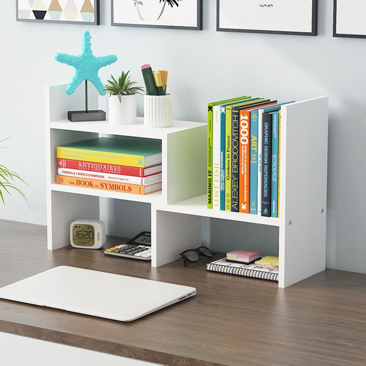

May 24th 2025 • 7 min read
Beyond Words: How Reading Transforms Thinking and Growth
This blog will explore the importance of reading, the best ways to cultivate a reading habit, and how engaging with texts can shape personal and professional success. If you're looking for motivation to read more and tap into its benefits, this guide is for you. Now, let's dive into the details! 📖✨
Introduction
Reading is more than just a pastime or academic necessity—it’s a gateway to knowledge, creativity, and personal growth. Whether you're flipping through the pages of a novel, diving into a business book, or scrolling through articles online, reading shapes the way you think, learn, and interact with the world. Here’s a step-by-step guide to understanding why reading is essential and how to cultivate a habit that enriches your life.
Step 1: Understanding Why Reading is Crucial
Reading is a powerful tool that benefits individuals and society in numerous ways:
- Expands Knowledge: Books provide insights into various fields, from science and history to self-improvement and storytelling.
- Boosts Imagination & Creativity: Fictional stories transport readers to new worlds, stimulating creative thinking.
- Enhances Vocabulary & Communication Skills: The more you read, the richer your vocabulary and ability to articulate ideas.
- Provides Emotional and Mental Health Benefits: Reading is therapeutic, helping to reduce stress and broaden emotional intelligence.
- Improves Critical Thinking: Processing information from different perspectives sharpens analytical skills.
Step 2: Choosing the Right Reading Material
Not all reading material is beneficial, so selecting books, articles, and other texts that align with your interests and goals is crucial:

- For Personal Growth: Self-help books, biographies, and philosophical texts inspire and motivate.
- For Professional Development: Business books, industry journals, and research papers provide valuable career insights.
- For Entertainment & Creativity: Novels, poetry, and short stories offer a mental escape and ignite imagination.
Step 3: Building a Reading Habit
Developing a consistent reading habit ensures you gain the full benefits of the activity:
- Start Small: Begin with a few pages or minutes each day to avoid feeling overwhelmed.
- Set Reading Goals: Aim to finish a book in a certain time frame or explore different genres regularly.
- Create a Comfortable Reading Space: A peaceful and cozy environment makes reading enjoyable.
- Use Technology: Audiobooks and e-readers offer convenient alternatives for busy schedules.
Step 4: Engaging with What You Read
Reading passively is beneficial, but engaging actively enhances the experience:
- Take Notes: Jot down interesting insights, quotes, or thoughts.
- Discuss with Others: Book clubs or online forums help you see different perspectives.
- Apply What You Learn: Implement new knowledge into your daily life for growth.
Step 5: Making Reading a Lifelong Practice
The key to fully benefiting from reading is to embrace it as an ongoing journey:
- Read Regularly: No matter how busy life gets, dedicate time to reading.
- Explore Different Topics: Venture beyond your comfort zone to expand your knowledge base.
- Recommend & Share Books: Encouraging others to read fosters a culture of learning.
Final Thought
Reading is a transformative activity that enriches your mind, strengthens communication skills,
and provides endless opportunities for learning and discovery. Whether you're just starting or
already a seasoned reader, the habit of reading will always prove beneficial.
So, what book will you dive into next? 📖✨